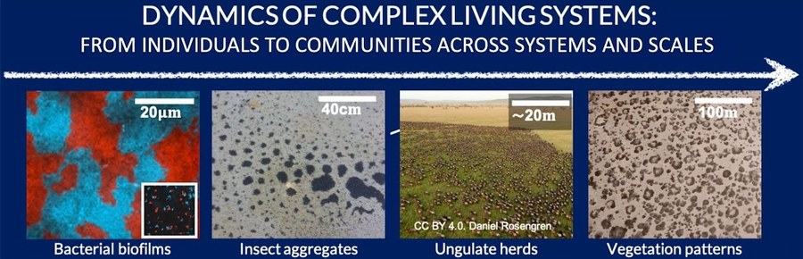

Our research focuses on understanding how organisms explore and respond to their local environment, and how these responses shape the outcome of larger-scale ecological processes — population abundances, species distributions, or ecosystem resilience. Using the mathematical formalism of statistical mechanics and intensive numerical simulations, our ultimate goal is to discern to what extent these larger-scale processes are emergent phenomena determined by organism-level behaviors, and to formalize this upscaling into unifying theoretical frameworks. We work across a diversity of systems and scales, with a recent primary focus on large terrestrial mammals exhibiting range-resident movement and dryland vegetation, where spatial patterns can be strikingly regular. In each system we develop mathematical models validated against empirical data, then use those models to make new, testable predictions — often in close collaboration with experimentalists and field ecologists across an extensive and growing network.
Drylands are home to roughly 35% of the world's population and cover about 40% of Earth's land surface, often in developing countries where the economy and human well-being depend strongly on ecosystem services. Understanding dryland dynamics — and predicting and mitigating their response to climate change — is a critical ecological and socio-economic issue. Dryland vegetation often self-organizes into regular spatial patterns such as rings, spots, and stripes, and theoretical work suggests these patterns indicate proximity to desertification transitions (Martinez-Garcia et al., 2023). We have developed a bottom-up approach combining mathematical modeling, greenhouse experiments, and analysis of field and satellite data to describe vegetation dynamics in drylands (Cabal et al., 2020), working from individual plants to whole ecosystems. At the individual level, our work revealed the mechanisms driving below-ground plant competition and how plant–soil feedback supports facilitation across stress gradients (Cabal et al., 2020; Cabal, Maciel & Martinez-Garcia, 2024) — resolving a long-standing debate about the drivers of below-ground plant interactions (see this outreach movie). At the ecosystem level, we combined satellite imagery from Sudan with remotely sensed vegetation biomass and precipitation time series to test how vegetation patterns anticipate impending desertification dynamics (Veldhuis et al., 2022).
Our group applies stochastic calculus to investigate how patterns of individual movement, observed in animal tracking datasets, determine interactions among individuals and between individuals and landscape features such as roads or fences. Much of ecological theory — from species-interaction models to mathematical epidemiology — assumes organisms interact following the "law of mass action," a simplification that is incorrect for most real scenarios since it assumes organisms roam freely and are equally likely to interact with any other organism sharing their environment. Our research has produced a new family of encounter models and statistical estimators that relax this well-mixed assumption and account for real movement behavior (Martinez-Garcia et al., 2020; Noonan et al., 2021), showing that realistic encounter rates can be higher or lower than mass action predicts, with implications for higher ecological scales and for how animals interact with roads, power lines, and other infrastructure. We are currently extending this work to interaction statistics (Garcia de Figueiredo et al., 2024) and embedding these models into birth–death population dynamics frameworks (Menezes et al., 2025).
In our more theoretical projects, we develop bottom-up mathematical frameworks to investigate how nonlinear feedbacks acting on individual movement and demographic rates shape population dynamics in space and time — asking to what extent long-range attraction/repulsion and growth activation/inhibition are system-independent drivers of spatial self-organization. We describe these processes from the individual level, accounting for inherent stochasticity, then use statistical mechanics and many-body physics techniques to upscale microscopic models to the population level, drawing on individual-based simulations, stochastic differential equations, random walk theory, interacting-particle systems, and partial integro-differential equations. Our results show the impact of long-range interactions and dispersal on ecological dynamics at scales ranging from spatial density patterns within a single generation (Martinez-Garcia et al., 2015; Dornelas, de Castro et al., 2024) to reversing the outcome of competitive exclusion (Martinez-Garcia et al., 2021; Maciel and Martinez-Garcia, 2021). Recent work shows aggregation can increase resilience in populations with Allee effects under environmental change (Jorge & Martinez-Garcia, 2024) and how environmental flows shape population spatial distributions and abundances (Silvano et al., 2024).
Microbial systems are ideal for studying emergent phenomena due to their fast characteristic timescales and the ease of laboratory manipulation. Our group has investigated the ecology and evolution of social behaviors in multicellular colonies, using Dictyostelium discoideum aggregates (Tarnita et al., 2015; Martinez-Garcia & Tarnita 2016, 2017; Rossine, Martinez-Garcia et al., 2020) and flagellum-repressed Vibrio cholerae biofilms (Martinez-Garcia et al., 2018) as model organisms. Combining spatially explicit stochastic models with analysis of microscopy images from experimental setups, we work to identify which feedbacks between microbial traits (adhesiveness, shape, motility), behaviors (quorum-sensing regulated exoproduct release, dispersal strategies), and environmental features favor the evolution of social behaviors.